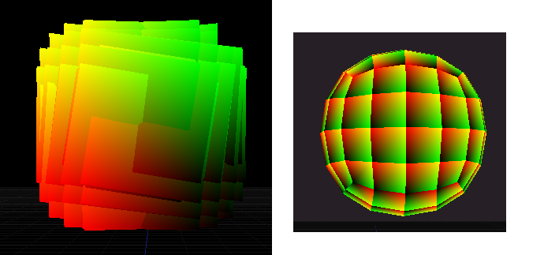

shifttab
I’m trying to recreate this fluffy foliage shader. Is this possible to do in urho?
The effect doesn’t seem to be that complicated and his node tree is fairly small but I just suck at shaders in general 
I’m already stuck in the beginning. This is what I tried:
#include "Uniforms.glsl"
#include "Samplers.glsl"
#include "Transform.glsl"
#include "ScreenPos.glsl"
#include "Fog.glsl"
varying vec2 vTexCoord;
varying vec4 vWorldPos;
#ifdef VERTEXCOLOR
varying vec4 vColor;
#endif
#
varying vec4 vUVColor;
void VS()
{
mat4 modelMatrix = iModelMatrix;
vec3 worldPos = ((iPos + vec4(iTexCoord, 0, 0)) * modelMatrix).xyz;
gl_Position = GetClipPos(worldPos);
vWorldPos = vec4(worldPos, GetDepth(gl_Position));
vUVColor = vec4(iTexCoord, 0.0, 1.0);
}
void PS()
{
vec4 diffColor = vUVColor;
// Get fog factor
#ifdef HEIGHTFOG
float fogFactor = GetHeightFogFactor(vWorldPos.w, vWorldPos.y);
#else
float fogFactor = GetFogFactor(vWorldPos.w);
#endif
#if defined(PREPASS)
// Fill light pre-pass G-Buffer
gl_FragData[0] = vec4(0.5, 0.5, 0.5, 1.0);
gl_FragData[1] = vec4(EncodeDepth(vWorldPos.w), 0.0);
#elif defined(DEFERRED)
gl_FragData[0] = vec4(GetFog(diffColor.rgb, fogFactor), diffColor.a);
gl_FragData[1] = vec4(0.0, 0.0, 0.0, 0.0);
gl_FragData[2] = vec4(0.5, 0.5, 0.5, 1.0);
gl_FragData[3] = vec4(EncodeDepth(vWorldPos.w), 0.0);
#else
gl_FragColor = vec4(GetFog(diffColor.rgb, fogFactor), diffColor.a);
#endif
}

It’s a round mesh but I’m confused because it is visible from the back but not from the front when I transform the vertices and it looks all wrong.